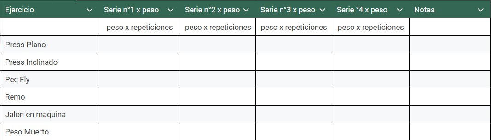
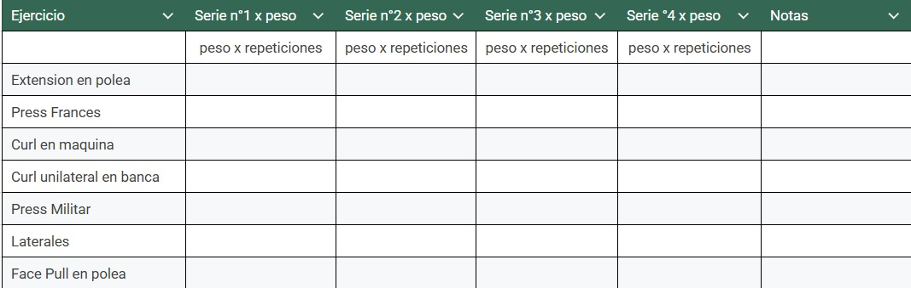
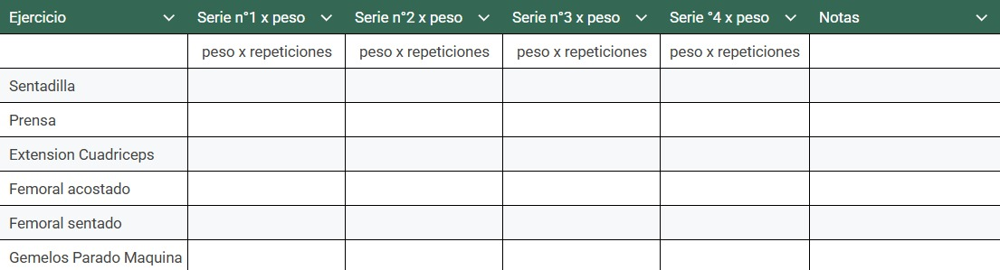
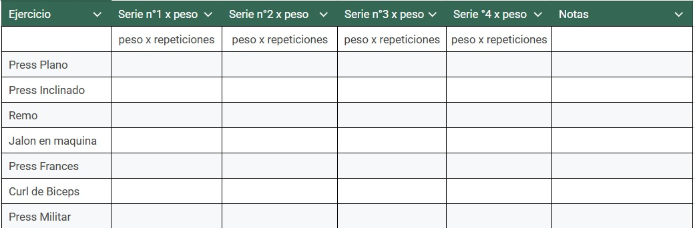
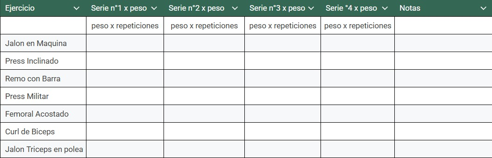
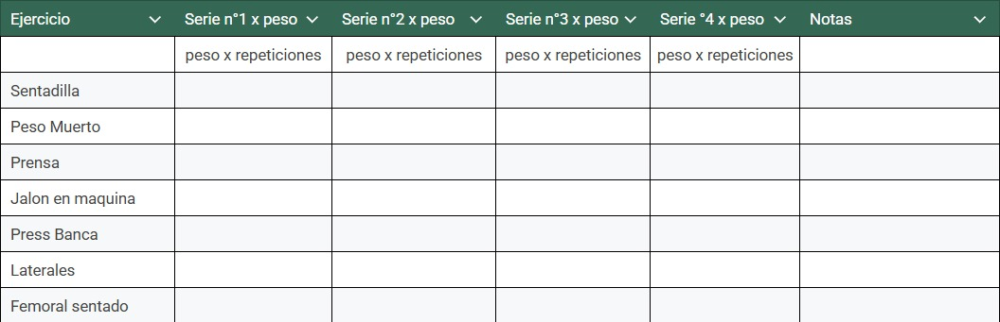

Filosofía de Entrenamiento Intenso
¿Qué es entrenar al fallo?
Entrenar al fallo no es llegar a donde te cuesta... es llegar a donde ya no puedas.
Es empujar una repetición más cuando el cuerpo grita basta, cuando la barra no sube,
cuando el dolor nubla la mente. Es ahí donde empieza el verdadero entrenamiento.
Todo lo anterior es solo calentamiento mental.
¿Por qué menos volumen y más calidad?
Hacer más no siempre es mejor. En esta filosofía, se busca lo mínimo necesario con el máximo impacto.
El volumen excesivo te lleva al desgaste, a la fatiga crónica, al estancamiento. Cada serie debe ser
ejecutada como si fuera la última. Si no terminas exhausto, no contaba.
La intensidad como factor diferencial
La diferencia entre un físico promedio y uno legendario no está en el número de ejercicios,
el número de series, el número de repeticiones, etc. Sino en la intensidad con que se ejecutan.
Intensidad no es solo cargar más peso y entrenar a lo loco. Es la actitud. La intención. La
violencia controlada con la que se encara cada repetición. La intensidad transforma.
Entrenar con huevos vs entrenar por cumplir
Entrenar con huevos es estar dispuesto a entrar al gimnasio como si fueras a la guerra.
Es entender que el dolor no es el enemigo: es la señal de que vas en el camino correcto.
Si vas al gimnasio solo para tachar una casilla o subir una historia... entonces mejor ni vayas.
Esto no es para tibios.
Tipos de Rutinas
Después de todo lo explicado, es momento de ver ejemplos concretos. Estas rutinas no son
para copiar sin pensar: son estructuras que puedes adaptar a tu realidad, tu disponibilidad
de días y tu nivel de compromiso. Ajustalas, modificalas, pero siempre con un norte claro:
progresar.
Push / Pull / Legs
Una de las divisiones más efectivas y populares. Tres días base: empujes (pecho, hombros, tríceps),
tirones (espalda, bíceps) y piernas completas. Se puede repetir para entrenar maximo 5 veces por semana
con una frecuencia alta y volumen bajo/moderado de trabajo.
Puedes hacerlo 3 o 5 veces por semana, según tu recuperación. Perfecto para progresar
en fuerza e hipertrofia, siempre que apliques intensidad real.
Pecho-Espalda / Brazos-Hombros / Piernas
Un enfoque diferente: separar los músculos grandes (pecho y espalda) de los músculos accesorios
(bíceps, tríceps, hombros), y darles a las piernas su propio día. Una rutina efectiva para
quienes entrenan 3/4 días a la semana con seriedad.
Ejemplo de rutina Pecho-Espalda / Brazos-Hombros / Piernas



Este tipo de división permite usar pesos pesados con buena recuperación. Ideal para aplicar
un entrenamiento de alta intensidad y volumen controlado.
Torso / Pierna (Upper / Lower)
Una división en dos partes que puedes repetir 2 o 4 veces por semana. Te permite trabajar
con frecuencia sin llegar al sobreentrenamiento. Muy adaptable a diferentes niveles.
Ejemplo de rutina Torso / Pierna

Fácil de organizar, difícil de hacer bien. La clave está en elegir ejercicios duros y
ejecutarlos con intensidad. Nada de relleno.
Full Body / Alternada
Cuando el tiempo es limitado, la rutina fullbody es una herramienta poderosa. Entrenar 2 o 3 veces
por semana, pero trabajando todo el cuerpo. Equilibrada, efectiva y brutal cuando se hace bien.
Full Body A – Énfasis en Torso

Full Body B – Énfasis en Pierna

Alternar A y B permite distribuir la carga y enfocarse en distintas áreas. Muy útil para novatos
o intermedios que no pueden ir al gimnasio todos los días pero aún así quieren resultados reales.
IMPORTANTE: Estas rutinas son guías. Usalas como base,
por eso mayormente se repite los ejercicios (como dije, puedes quitar y agregar) pero adaptalas según
tu experiencia, descanso, tiempo disponible y mentalidad. Lo importante no es cuántos ejercicios haces,
sino con cuánta intensidad los ejecutas.
Planificación del Entrenamiento
Frecuencia ideal por grupo muscular
La frecuencia de entrenamiento no es una regla escrita en piedra, pero hay principios que funcionan
mejor que otros. Estudios indican que entrenar cada grupo muscular dos veces por semana es más
efectivo que una sola (Schoenfeld et al., 2016). Pero si entrenas con intensidad real, como se propone
en HIT o Heavy Duty, QUIZÁS una vez por semana sea suficiente. La clave es la recuperación.
¿Quieres progresar? Presta atención a tu rendimiento. Si te estancas, puede ser por exceso de volumen
o falta de frecuencia. No copies ciegamente. Escucha al cuerpo y sé brutalmente honesto.
Número de series efectivas
Las series efectivas son aquellas que realmente estimulan el crecimiento muscular. No cuentan las
de calentamiento ni las medias tintas. Si no estás CERCA del fallo muscular, no cuenta.
En entrenamientos convencionales se habla de 10 a 20 series por grupo muscular por semana
(Brad Schoenfeld). Pero en un enfoque como HIT, UNA sola serie por ejercicio llevada al límite puede
ser suficiente.Menos cantidad. Más intensidad. Todo depende del enfoque que elijas... pero recuerda:
una serie hecha con todo vale más que diez hechas por cumplir. Pero, si quieres que te hable con
sinceridad, entre unas 4 a 8 series para musculos pequeños y 6 a 10 series para musculos grandes,
pueden ser buenos números, eso depende de ti, y de como te sientes en entrenar, experimenta.
Periodización básica sin complicarse
No necesitas una planificación compleja con ciclos, bloques y tablas interminables. La periodización
básica puede aplicarse de forma sencilla: alterna semanas más duras con semanas de descanso. Manten
la intensidad, pero maneja el volumen o frecuencia para evitar el agotamiento.
Una simple regla: cada 4 a 6 semanas, baja el volumen o la carga durante 1 semana. Bueno, eso dicen
bastantes entrenadores e influencers, "despues de entrenar "intenso", has una semana de "descarga", asi no
vas a perder musculo y bla bla bla". Sinceramente, ¿sabes cuál es la forma más efectiva de recuperarte?
No entrenar. Piensalo, si disminuir la intensidad y el volumen mejora tu recuperación, imagina lo que
sucede cuando tomas un descanso total. Te recuperarás aún más rápido. ¿No te parece lógico?
Además, una semana de descanso no hará que pierdas músculo, eso es prácticamente imposible. Lo único
que podrías notar es la falta de bombeo muscular, y quizás por eso algunos piensan que están más flacos
después de una semana sin entrenar.
Cómo progresar: sobrecarga real, no solo agregar peso
La sobrecarga progresiva no es solo levantar más peso. Es ejecutar mejor, con más control, con menos
trampa. Es llegar al fallo con un peso que antes no podías. Es mantener la forma aún cuando duele.
No se trata de sumar kilos sin control. Se trata de mejorar rendimiento, repeticiones, técnica y enfoque.
No confundas progreso con ego.
Cuándo y cómo cambiar la rutina
Si algo funciona, no lo toques. Cambiar por aburrimiento es lo que hace el amateur. El profesional
repite lo que da resultados. Pero si dejaste de progresar por completo, sientes fatiga constante
o simplemente no estás recuperando, es hora de ajustar.
Cambiar la rutina no significa empezar desde cero. A veces, con solo modificar el orden de los
ejercicios, la frecuencia o el tipo de estímulo (más carga, menos reps, más control) es suficiente.
Experimenta, pero con propósito.
Ejercicios Fundamentales
Los reyes: sentadilla, peso muerto, press banca, dominadas, remo
Los llamamos “los reyes” por una razón: son los ejercicios más completos del mundo del entrenamiento.
Desarrollan fuerza, masa muscular y mentalidad. Se pueden usar para hipertrofia o fuerza, pero al final,
ambos objetivos se cruzan. La ejecución correcta de estos básicos no solo construye músculo: construye
carácter.
No son ejercicios lindos, no son cómodos, y por eso muchos los evitan. Pero son los que hacen
la diferencia. ¿No haces sentadillas porque una revista dice que no estimula solo el cuádriceps?
Lo siento, eso es una excusa. No las haces porque son duras. Porque no puedes poner los mismos discos
que los influencers. Superalo.
Mientras buscas el ejercicio “más óptimo”, ellos están creciendo con lo básico. La sentadilla no
es solo cuádriceps: es glúteo, core, espalda alta. El press banca no es solo pecho: es triceps, hombro,
estabilidad. Cada uno de estos ejercicios estimula múltiples músculos directa o indirectamente. Por eso
son obligatorios, especialmente si llevas menos de 2 años entrenando. Haz lo que funciona. Y punto.
Máquinas vs pesos libres
¿Qué es mejor? ¿Pesos libres o máquinas? Te lo digo claro: los dos. Pero depende. Las máquinas no son
para principiantes ni para vagos. Son herramientas poderosas si las usas con propósito. No son inferiores:
son específicas.
¿Tienes un grupo muscular que no crece? La máquina puede ayudarte a aislarlo mejor. ¿Tienes una lesión
o una limitación que no te deja progresar con pesos libres? La máquina es tu aliada. El remo con barra
puede ser más completo, pero también más lesivo si lo haces mal. El remo en T con apoyo te permite
concentrarte mejor en los dorsales o espalda alta. Todo tiene su lugar… si sabes usarlo. Pero no
reemplaces los básicos por comodidad. Usa las máquinas como complemento, no como excusa.
Ejercicios “de relleno”: cuándo sí, cuándo no
No todos los ejercicios son necesarios. Y no todos los ejercicios son inútiles. El problema es cuando
los usas para llenar tiempo o sentir que “entrenaste más”. Si ya hiciste una buena serie efectiva en
sentadilla, ¿realmente necesitas cinco ejercicios más para pierna? No. Pero si un grupo pequeño quedó
relegado, ahí sí puedes usar un movimiento extra, corto y específico.
Usa ejercicios de relleno solo cuando tengas una razón concreta: aislamiento controlado, corrección
de debilidades, o trabajo técnico. Pero no para inflar la rutina. Enfocate en la calidad, no en la
lista de ejercicios.
¿Por qué no necesitas 15 ejercicios por músculo, 20 series por ejercicio y 30 repeticiones por serie?
¿De qué sirve hacer 20 ejercicios si ninguno es efectivo? ¿Quieres hipertrofia? Entonces estimula
el músculo, no lo aniquiles. Mike Mentzer lo decía claro: “Una serie efectiva, bien ejecutada,
llevada al fallo, es más que suficiente”. Si aprietas el interruptor, la luz se enciende. No necesitas
apretarlo 20 veces.
“No pain, no gain” es un mito malinterpretado. Si así funcionara, todos entrenaríamos 10 horas diarias.
No se trata de sufrir más: se trata de estimular de forma precisa y permitir que el cuerpo crezca. Haz
menos, hazlo mejor, y descansa lo necesario.
¿Cuántos ejercicios hacer? No lo sé. Depende de ti. Pero si no tienes claro por qué haces 5 ejercicios
para bíceps o 6 para pecho, es hora de replantear tu entrenamiento. Empieza por lo mínimo efectivo.
1 ejercicio. 1 serie. Fallo muscular. Técnica perfecta. ¿Sientes que no es suficiente? Suma, pero con
lógica. No por ansiedad.
Errores comunes
Entrenar para el ego
El gimnasio no es un escenario. No estás ahí para mostrar, estás para construir. Pero muchos cambian
la técnica por más discos, el control por el impulso, la progresión por la apariencia. El ego es el
enemigo número uno del progreso real.
Levantar más no significa crecer más. Si tu forma se rompe, si el movimiento se vuelve un show de
circo, lo único que vas a ganar son lesiones. ¿Quieres verte fuerte? entrena para ser fuerte. Técnica
perfecta, peso real, progreso auténtico. El espejo no construye músculo, el esfuerzo sí.
No respetar el descanso
Nadie crece mientras entrena. Si así fuera, entrenaríamos 24 horas al día, ¿no? Pero no funciona así.
El crecimiento sucede cuando descansas, cuando duermes, cuando comes bien. El entrenamiento solo
estimula, pero es el descanso el que construye.
Aun así, muchos siguen machacando el cuerpo 6 o 7 veces por semana como si fueran máquinas. No lo son.
Resultado: estancamiento, fatiga crónica, lesiones... y frustración. Si no sabes cuándo frenar, tampoco
vas a saber cuándo avanzar.
El descanso no es para débiles. Es parte del entrenamiento. Dormir bien, no entrenar lo mismo todos
los días, dar al cuerpo tiempo para recuperar… eso es progresar. Si no descansas, no creces. Punto.
Exceso de volumen sin intensidad
Hacer más no es hacer mejor. Puedes entrenar 2 horas, hacer 10 ejercicios y no generar ni medio
estímulo real. ¿Por qué? Porque sin intensidad, todo es irrelevante.
No se trata de acumular series y repeticiones. Se trata de hacer lo necesario con la mayor calidad
posible. Si tu serie termina y podrías hacer 10 repeticiones más, no estás entrenando: estás moviéndote.
Una serie efectiva vale más que veinte tibias. El volumen sin intensidad es puro relleno. Y no alimenta
músculo.
Copiar rutinas de dopados
Copiar la rutina de tu ídolo profesional es como tratar de seguir la dieta de un superhéroe: no vives
en su mundo. Ellos entrenan con químicos, recuperan más rápido, toleran más volumen, y viven para entrenar.
Tú no. Y no pasa nada.
Entrenar natural implica entrenar inteligente. Menos volumen, más intensidad. Más descanso, más enfoque.
Si haces lo que hacen ellos sin su farmacología, no vas a llegar más lejos: vas a romperte antes.
Tu progreso depende de tu biología, tu descanso, tu comida, tu constancia. Deja de copiar, empieza a
construir lo tuyo.
Entrenamiento para Naturales
Lo que realmente importa si no usas química
Si eres natural, juegas con otras reglas. No tienes 5 gramos de testosterona flotando en
tu sangre, ni te recuperas milagrosamente después de 20 series por músculo. Tu cuerpo
tiene límites reales. Biológicos. Así que lo primero es aceptar esa realidad y dejar
de mirar rutinas de tipos que viven enchufados al laboratorio.
Recuperación, frecuencia y esfuerzo real
Lo que más importa no es cuántas series haces, sino cómo las haces y cuánto puedes
recuperarte de ellas. No es volumen, es estimulación. Una serie al fallo bien ejecutada
puede ser más efectiva que cinco con el 70% de intensidad. Y si no te recuperas,
no vas a progresar. Así de simple. Un natural tiene que entrenar duro, pero también
inteligente. Frecuencia adecuada, descanso adecuado, nutrición precisa. Nada más,
nada menos.
No puedes entrenar como alguien que se pincha
Deja de copiar al culturista profesional que hace 30 series por grupo muscular,
va dos veces al día al gimnasio y vive con una aguja en el brazo. No eres él.
No tienes su genética, ni su farmacología, ni su estilo de vida. Tú tienes que
optimizar cada repetición. No hay margen para el error, porque el margen de mejora
es más estrecho. Pero ahí está la belleza: lo que consigas, lo vas a ganar con
esfuerzo real. No con química.